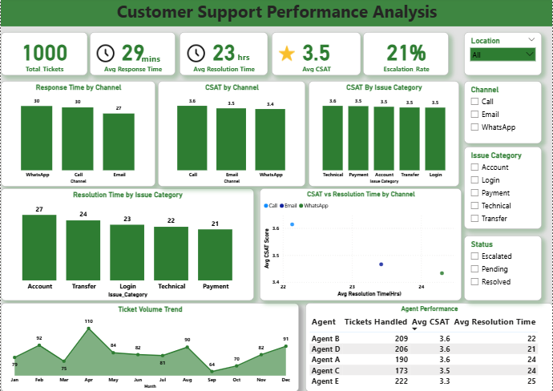

Data Analyst | Turning messy data into clear business insights
I am a Data Analyst with over 3 years of experience leveraging Power BI, Excel, SQL, and customer insights to transform complex data into actionable insights that drive smarter business decisions.
Problem: No centralized way to track support performance.
Tools: Power BI, Excel, DAX
Built an interactive Power BI dashboard to track key customer support KPIs including response time, resolution time, CSAT, and ticket trends, enabling better performance monitoring and data-driven decision-making.

View Interactive DashboardI am open to Data Analyst roles and collaborations.
Email: youremail@example.com